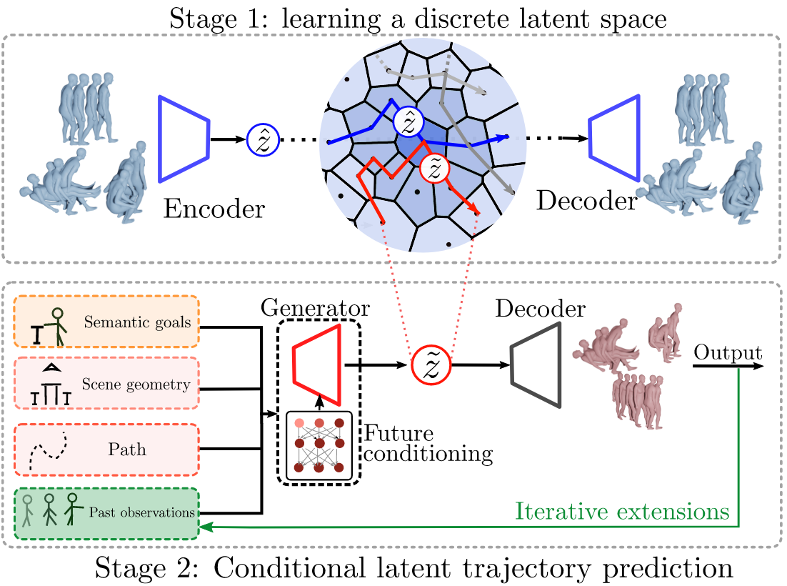
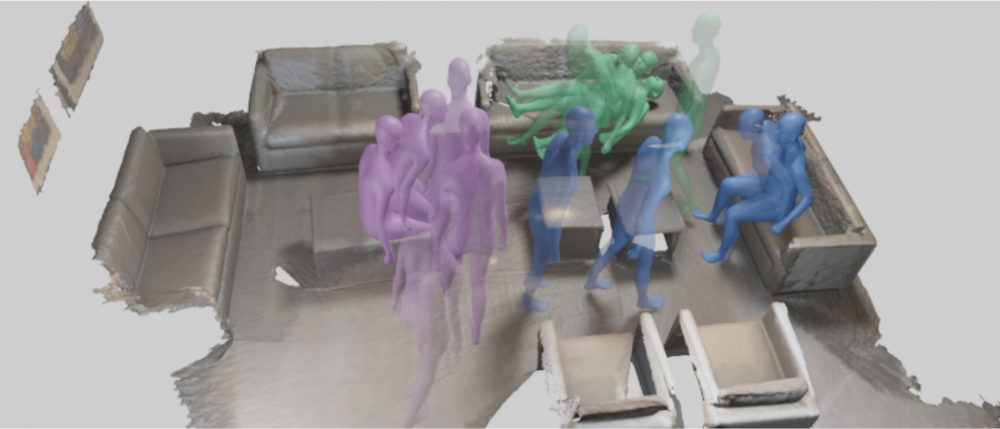
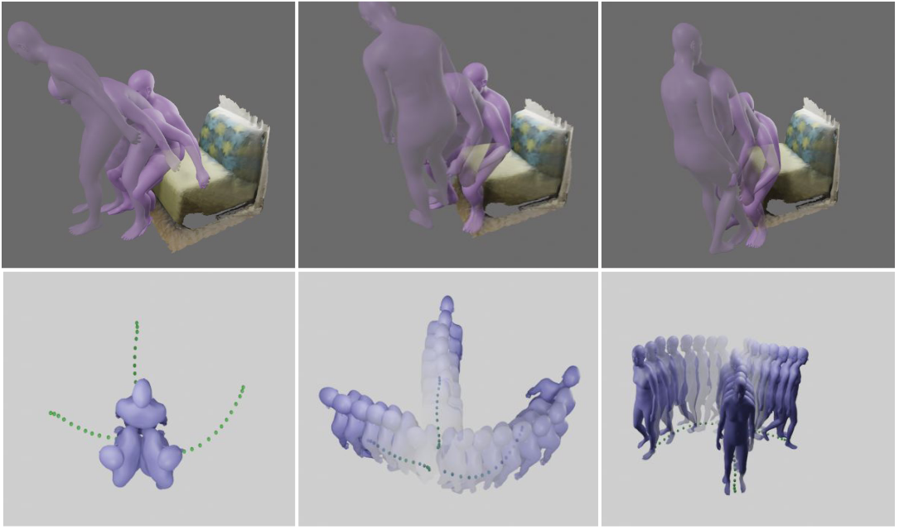

We present Purposer a novel method based on neural discrete representation
learning to generate human motion to populate 3D indoor scenes. Given a 3D pointcloud of a scene and various
control signals, Purposer is capable of
generating long motions within a context scene taking into account human-object interactions.
Abstract
We present a novel method to generate human motion to populate 3D indoor scenes. It can be controlled with various
combinations of conditioning signals such as a path in a scene, target poses, past motions, and scenes represented
as 3D point clouds. State-of-the-art methods are either models specialized to one single setting, require vast
amounts of high-quality and diverse training data, or are unconditional models that do not integrate scene or
other contextual information. As a consequence, they have limited applicability and rely on costly training data.
To address these limitations, we propose a new method, dubbed Purposer, based on neural discrete representation
learning. Our model is capable of exploiting, in a flexible manner, different types of information already present
in open access large-scale datasets such as AMASS. First, we encode unconditional human motion into a discrete
latent space. Second, an autoregressive generative model, conditioned with key contextual information, either with
prompting or additive tokens, and trained for next-step prediction in this space, synthesizes sequences of latent
indices. We further design a novel conditioning block to handle future conditioning information in such a causal
model by using a network with two branches to compute separate stacks of features. In this manner, Purposer can
generate realistic motion sequences in diverse test scenes. Through exhaustive evaluation, we demonstrate that our
multi-contextual solution outperforms existing specialized approaches for specific contextual information, both in
terms of quality and diversity. Our model is trained with short sequences, but a byproduct of being able to use
various conditioning signals is that at test time different combinations can be used to chain short sequences
together and generate long motions within a context scene.
Purposer Approach
We build our model based on neural discrete representation learning. Thus, in our model, human motion is first
mapped into an abstract discrete feature space, without any conditioning. Any human motion given as input can be
represented as a trajectory in that discrete latent space, i.e., a sequence of centroids. After this, motion is
modeled in a probabilistic manner, directly in that latent space, by predicting latent trajectories in an
auto-regressive manner. At this stage, various forms of contextual information can be used to condition the model
and reduce prediction uncertainty. The latent trajectory is then mapped back into a continuous motion
representation and latent trajectories are finally decoded into motion.

Results
We propose a method able to generate realistic-looking motions that interact with virtual scenes. In this
example
we take a scene from ScanNet [12]. The motion can be controlled with semantic action/object queries: here the
human is first commanded sit on table, then sit
on couch,
and finally lie on couch.
Purposer is a
learning-based probabilistic model that can work efficiently with diverse types of conditioning.

Motion control
Our model is able to interact with the same object when initialized with random initial body locations and
orientations. We are able to control locomotion with the path conditioning (bottom row). Our model is capable of
generating realistic locomotion in random directions and with arbitrarily chosen paths. In the
supplementary video, we also show examples of long-term motions combining short-term motions for object
interaction
and for locomotion.

Citation
Acknowledgements
This work is partly supported by the project MoHuCo PID2020-120049RB-I00 funded by
MCIN/AEI/10.13039/501100011033. This webpage template was borrowed from this project page. Icons: Flaticon.